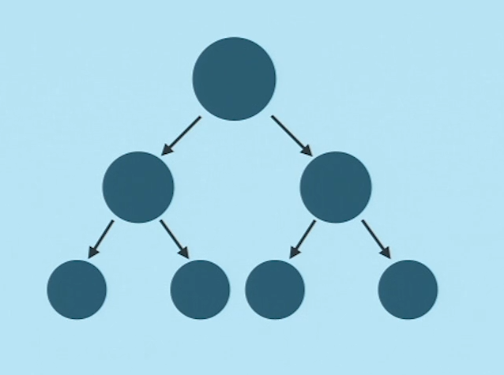
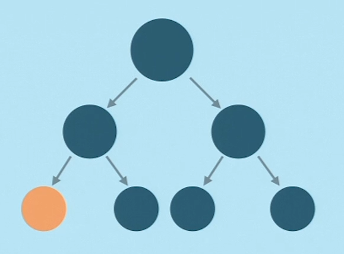
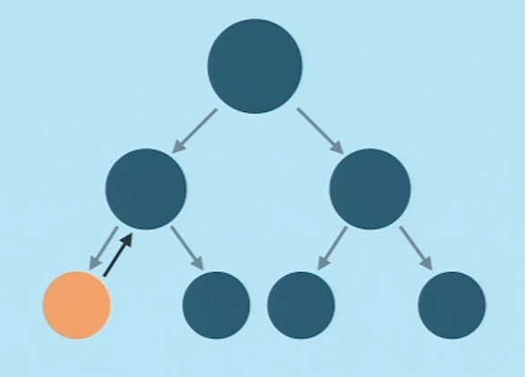
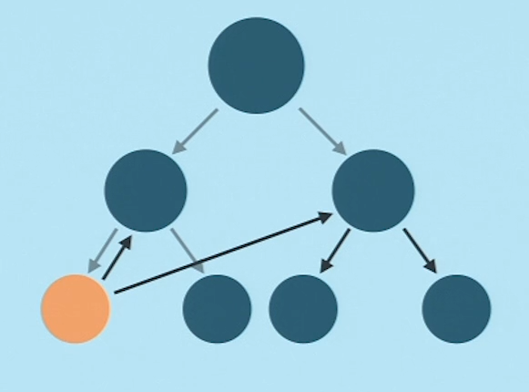
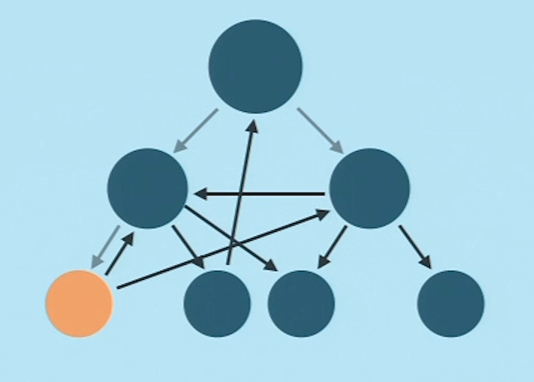
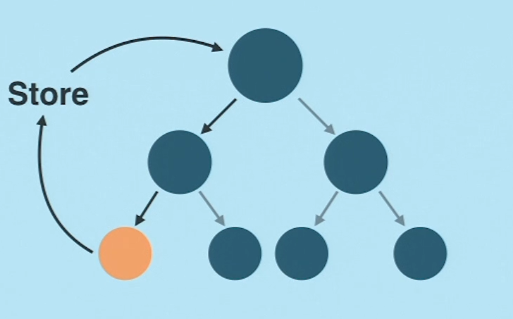
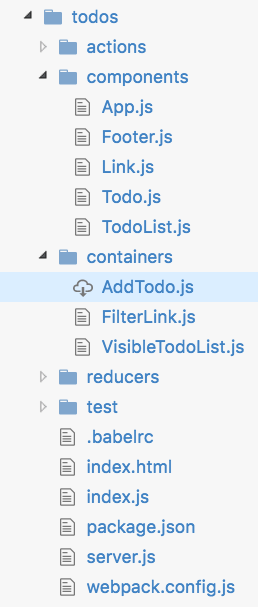
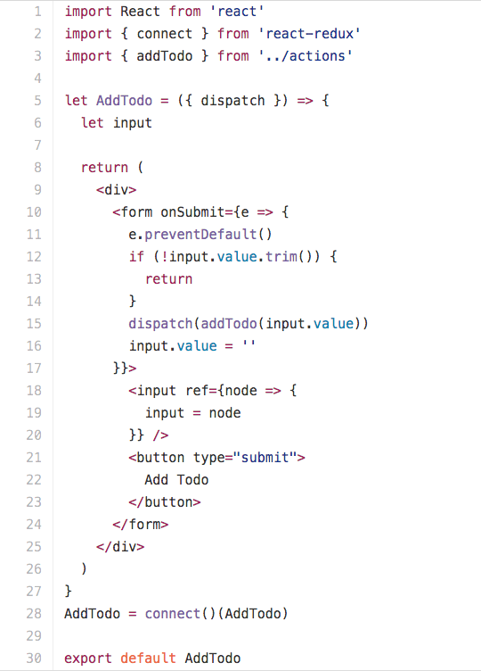
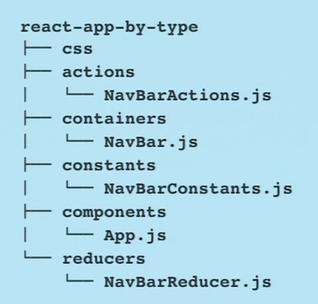
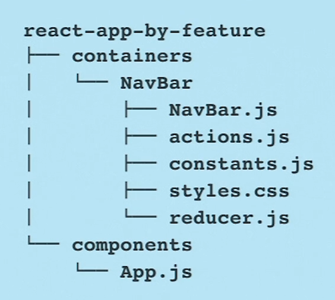

這個主題其實是來自以下影片的筆記
How To Scaling React.js App
這影片才半小時左右，滿值得看看的，有機會看完，也上來修改或補充我說的東西，
因為畢竟他說的英文有濃濃的xx腔，聽不是太懂，只能根據我所聽到的以及消化過的東西跟大家分享
前言
在開始之前，先大概瞭解作者。
作者叫mxstbr，他開發的boilerplate目前在排名網站中，
目前是第二名，在他影片的前言有特別提到他使用了
- KeyStoneJs
- ElementalUI
KeyStoneJs你可以把它想像成它是基於express框架更上面的應用層，他提供了許多功能，如
安全認證，後台的管理頁面，動態路由，密碼自動加密，表單處理，Email發送…等，DB的部分
主要是利用Mongoose去對MongoDB做處理。對於加速網站的開發是有一定的好處。
KeystoneJs簡體版的官網
ElementalUI是建立於React上的UI Toolkit，很像Boostrap，有興趣可以查查，不再說明。
正式進入主題
在作者的經驗談中，他認為Scaling React.js App 你必須了解四個重要的問題
- What is Scalability?
- State Management
- Architecture
- Performance
What is Scalability?
一般人提到Scalability會認為是，一個有能力變更大和處理更多work的的系統。
但這又是什麼意思？簡單來說就是這個系統能handle事情的能力多寡，等於這系統的Scalability
事情的種類包含了使用者的所有發出的事件，前後端開發者的人數，網站的功能的數目。
State Management
傳統來說，如Angular 1.x 或一些比較舊的方式，維護State的方式，是子元素一改變就通知父元素，
例如一開始的狀態如下:

突然間有一個child component的狀態改變了

他就會跟他老爸說，『老爸，我改變囉』

但事情可能沒那麼簡單，因為它可能有兩個老爸，另一個老爸又有自己的孩子(觀察實線)

到最後可能長這樣..

如果今天你按一個button，中間的關係如上圖，請問你一個問題
How To Debug?
非常困難debug，因為你根本不知道哪一個地方爆了，所以你只能慢慢trace..
鑑於如此，所以React提供了一個flux的架構，也就是單向流的概念，如下圖

從上圖中我們可以觀察到，child component改變後，接著找store，store改變state後，通知
root component，在一層一層的從由父元素改變下來，形成一個cycle(觀察實線的部分)。
這樣的好處就是你debug是有跡可循的，輕鬆的
而這樣的資料流模式備受推從，從中又有演伸出Redux，在Redux中又有一些新的規則來確保資料
流不僅是單向，而且還是immutable，也就是pure function以及所有的state都不該被直接做
改變。
Architecture
在React中，redux的做法Dan將Component分成兩類
- Containers
- Components (又稱Presentational Components)
有興趣可以參考Dan對於此Component的定義
但此作者給出簡單的定義，我覺得相當易懂
Container Component concern how the things work
Component concern how the things look
我們以Dan的Todolist的架構來解釋，請看下圖。

我們可以看到container底下有三個js檔，AddTodo和FilterLink和VisibleTodoList
均為描述一個component how to work，我們點擊AddTodo.js來看看，如下圖:

可以看到程式碼在說明該如何addTodo，而沒有任何有關於畫面描述的程式碼在裡面。
而且也特別注意Container和Component本身沒有所謂的上下關係，這點也可以從Code裡面清楚
的看到。
view層(ex:點擊button) -> actioncreator(發dispatch) -> Action -> Reducer -> 更動Store(newState) -> 重繪Component
非常清楚的單向流。
想多了解可以看看Dan的Examples
How to structure your component?
傳統來說，許多人會以type來作為分類的標準，如下：

其實這種分法並沒有錯，但有幾個很大的問題
- 當你的是個大型服務的時候，在檔案很龐大的情況下，找檔案不容易啊，你可能會說，我覺得還好！但須考慮多人多工，別人需要維護你的Code的情況。
- 在Redux的架構下，我們知道一個功能完整的cycle，會有action，container，constants，components，reducer等，所以當你在debug的時候，就會一直在那換資料夾，浪費時間。
- 非常不彈性，搬移困難。假設你另外一個專案想用此Component，你必須要去上述的資料夾中分別複製到新的專案的各別資料夾中。
所以影片中的作者提供了以function為分類標準:

很顯然上面的缺點，在這架構下，完全沒此問題
- 維護，新增，修改非常方便。
- 非常彈性，沿用性高。
這就是Component isolation的精神
Data Fetching
這個主題是Architecture最後一塊拼圖，它牽涉三個重要的概念
- Generator Function && async
- Redux-thunk
- Redux-Saga
Generator Function
前置作業
並在需要用到GF的地方加上
Generator Function是ES6的新feature，以下文章的範例有些均來自下列blog，加上自己的解釋
講到GF，有幾個以下的重要關鍵字會在GF的scope常用到，如：
- yield
- next()
- next(x)
- yield*
簡單來說GF會和這些關鍵字去實現非同步的操作。後面馬上就有例子：
一般，GF的長相如下:
直接說明yield和next的用法。
一般正常的函數，你呼叫它，它就持續把函數內的代碼依序跑過，但GF不同的是，當程式執行到yield這行
他會把yeild右邊的表達式丟出函數，然後就停住，下一次在使用next呼叫，他會從這一行開始執行
而next()，他的返回值是個物件，屬性有兩個
- value: yield右邊任何的表達式都會被求值並傳給他的調用者，在這裡就是指gen
- done : 假設這個GF被完全執行完畢，就會是True，否則為False
來一個簡單的例子:
第一次呼叫next，跑到yield i這行的時候，他會i丟出函數，而i在前面已經被給值所以是1
第二呼叫next，從yield i這行開始往下跑，i++，因為while所以再次看到yield i，丟出i，因為i是2，所以值是2
以此類推
再來一個簡單的例子
第一次呼叫next，跑到
把total丟出函數，又因為total預設是0，所以console出來就是0
第二次呼叫next時，再把total接收next傳進來的值100，所以這行就變成
所以yield有一種順序:
第一次執行到next()，先丟值出去。第二執行到next()，看看是否有傳入新的值，有的話就取代，再丟出來
先丟在取代的概念
再看一個例子:
第一次執行next()，因為yield屬於先丟在取代的概念，所以就算一開始你給它初始值，一樣都出個空陣列給你
第二次執行next()，因為有初始值，所以取代原本的arr，所以這行變成
|
|
後面就以此類推。
再來談 next(x)，請看下列的範例 //來源
第一次呼叫next時，會把x+1丟出來，因為x在前面有給值5，所以value會是6
第二次呼叫next時，從開始，yield先丟在吃所以將(x+1)換成12，所以y=24，然後跑到下一行將y/3丟出來，所以是8
第三次呼叫next時，從1開始，並將y/3換成13，所以z=13
最後return 5+24+13
最後想談的是yield*，簡而言之就是將控制權交給內層的GF，code如下，來源
簡單說就是執行到yield* foo時 會跳到 foo()這個GF，將控制權交給它。
Async
前面講一大堆GF的用法，其中有一個好處是他可以用很像同步的寫法去實現非同步。
這樣寫會比較符合人性思考邏輯的觀點，也比較好debug。
假設我有一個特定的需求，我想要拿到特定order裡面，特定的phase下的某個comment
我用分別用三個函數來表示，並且此三個三數都是return promise:
- getOrder()
- getPhase()
- getCommnet()
可能的寫法是
照一般的人用promise寫法會是(簡化版)
現在我們有GF，可以改寫成
run這個GF，是不是很像同步的寫法
getOder -> getPhase -> getComment
接著我們解釋後面的程式碼:
- gen.next()會先跑yield右邊的getOrder(orderId)，其實這是一個向server發出request，而且return promise的函數
因為是return promise所以我們可以利用then - getOrder(orderId)會為我們拿到特定的order。注意第二個next有參數order，他會在run函數取代getOrder(orderId)並把值給左邊order變數
- 接著在run函數跑到第二個yield，同理先處理右邊的function，一樣回傳一個promise，之後跟上面一樣
- 以此類推
好啦，我承認這樣寫，下半部的部分有點鳥，所以我們改成遞迴去解決這問題
|
|
這節主題不是async，怎麼講一大堆GF的用法？
其實async是ES7 feature，他可以用更輕鬆的方式改寫GF
差別在於
- 上面的function* run() 換成 async function run()
- 把yield變成await
- 不用再考慮遞回的部分
於是上面的code就變成
|
|
這樣就結束惹，不必自己寫遞回執行
好啦 有興趣想深入瞭解的 在自己去Google
Redux-thunk
簡單來說，就是強化版的Action Creator，因為ActionCreator是pure function
所以thunk也是pure function。
舉個例子，當今天我想做Login這個Action，但這個Action可以拆分成幾個小任務
- 發出request to server
- server render info to client side
- 如果成功則XXX 如果失敗 則XXX <–通常是返回promise
如果你想用redux做到這件事情，你該怎麼做？而上述小任務中，彼此又有先後順序之分(非同步)
redux-thunk就可以幫你解決這類的問題。
- 同步: dispatch(action)
- 非同步: dispatch(thunk)
以下的範例code取自:來源
|
|
loginFlow本身是ActionCreator，return那串function就是thunk，可以清楚看到thunk在做什麼事情，它先幫你
發出request，在幫你呼叫loginAPI，如果成功或失敗則發出相對應的Action。
下面則是對應的Reducer
以上就是redux-thunk簡單的介紹
redux-saga
作者建議選擇redux-saga來處理 async Action 而不是使用redux-thunk。
以我淺薄的看法，有幾項原因:
- 因為redux-saga是以GF為主，所以可以用到GF本身語法帶來非同步的好處，這些好處
包含上面所提的，用類似同步的語法去表示非同步..etc等。 - 相較於redux-thunk，非常容易Testing
- 提供更多平行處理的機制
redux-saga的部分，就講到這，因為打算開另外一篇單獨寫。
Performance
How to handle performance in big react.js app?
- Webpack - Code Splitting
對於大型的App，將程式全部打包成一個bundle.js檔往Client端丟，並不是很好的做法。
因為有些程式只會在某畫面需要用到，因此webpack提供了一個Code Splitting的功能，
提供比較高的自由度，讓開發者根據需求分割程式為一塊一塊的chunk，在需要的時候，在從client端發出
api載入需要chunk。
- shouldComponentUpdate
在flux架構下，child component變化 -> store變化 -> root component 重新render，
但有些component是不需要render的，當你的app越來越大型的時候，component幾百幾千的時候
效率的問題，就必須考量，關鍵點在於你的App一開始的定位，會決定你是否要考慮加上
如果下一個Props不等於現在這個props則代表有改變，所以return會是true則重新render
但我們更深入來看這一行
這相當於比較兩個object
必須先比較type，比較完在比較value，但當你的object很大的時候呢？
而且每個Component也要來比一次？
我們知道比較演算法來說，一般平均的Case是Big O是 nlogn
若我們有n個component則，時間複雜度就是(n^2)*log(n)
Deeply comparing object is expensive
所以作者就提出了Immutable.js這個解法，我附了一個連結，有興趣可以參考
Imuutable.js簡介
為什麼用Immutable是好的解法？，我們來看一下官網的簡單介紹
These data structures are highly efficient on modern JavaScript VMs by
using structural sharing via hash maps tries and vector tries as popularized
by Clojure and Scala, minimizing the need to copy or cache data.
所以當你今天要使用immutable的時候，你要先把他們轉成immutable使用的資料結構，而他是用hash出來的值
去存這些，所以當你兩個物件要比較的時候，時間複雜度就會變成O(1)
Deeply comparing objects is cheap !
下面是個例子：
在immutable.js裡面創建state的方式:
immutable比較用equal
|
|
當然，immutable.js好處不只如此，因為它提供他自己的資料結構，所以他有很多好用的method可以使用
這部分就不多說，期待看到其他人可以分享。
分享到此結束，下台一鞠躬，說錯的地方，請大家指證，想要多補充的也可以。